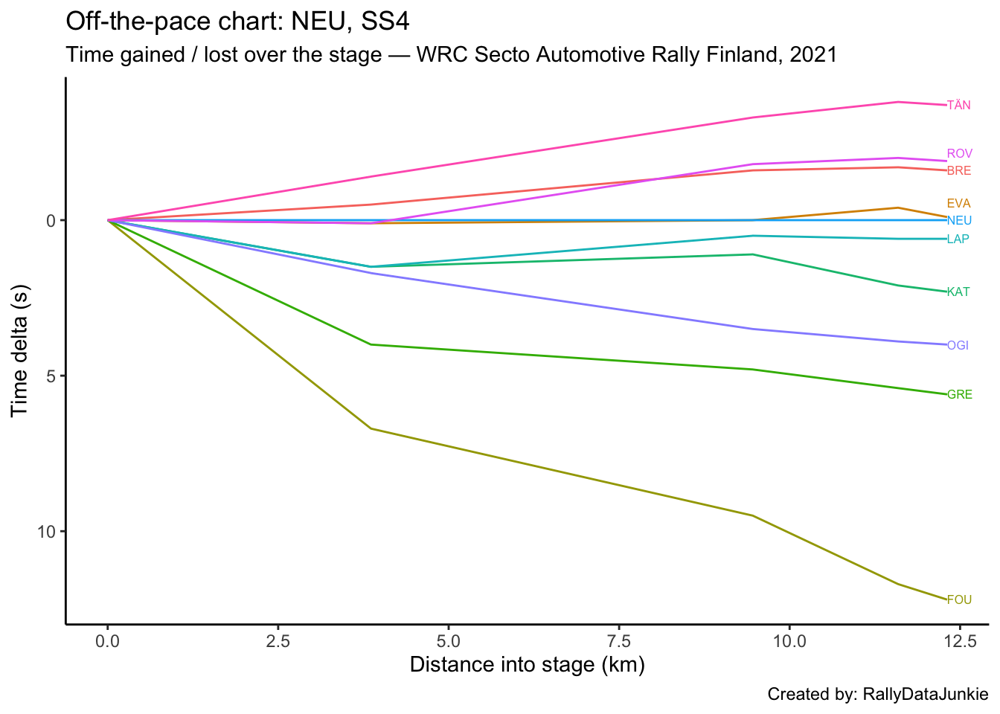
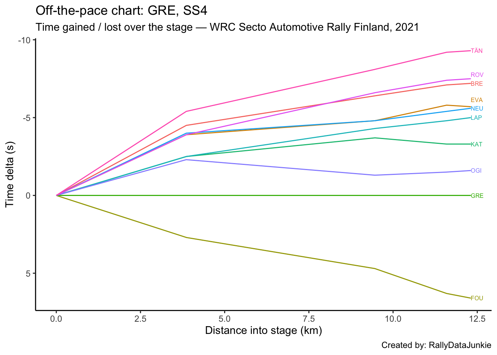

4 SS4 Results
| Pos | Car | Code | Time (s) | Gap | Diff |
|---|---|---|---|---|---|
| 1 | 8 | TÄN | 335.9 | 0.0 | 0.0 |
| 2 | 69 | ROV | 337.7 | 1.8 | 1.8 |
| 3 | 42 | BRE | 338.0 | 2.1 | 0.3 |
| 4 | 33 | EVA | 339.5 | 3.6 | 1.5 |
| 5 | 11 | NEU | 339.6 | 3.7 | 0.1 |
| 6 | 4 | LAP | 340.2 | 4.3 | 0.6 |
| 7 | 18 | KAT | 341.9 | 6.0 | 1.7 |
| 8 | 1 | OGI | 343.6 | 7.7 | 1.7 |
| 9 | 44 | GRE | 345.2 | 9.3 | 1.6 |
| 10 | 16 | FOU | 351.8 | 15.9 | 6.6 |
4.1 Stage SS4 Splits Analysis
Reports on splits
4.1.1 Split Locations
Length of each split section in km:
| full_split_distances | stage_dist | |
|---|---|---|
| split_1 | 3.86 | 3.86 |
| split_2 | 5.60 | 9.46 |
| split_3 | 2.13 | 11.59 |
| split_N | 0.72 | 12.31 |
4.1.2 Stage Split Times & Result
Summary of stage split times and overall stage result:
| code | split_1 | split_2 | split_3 | split_N | diffFirstS | position |
|---|---|---|---|---|---|---|
| TÄN | 113.0 | 273.1 | 320.7 | 335.9 | 0.0 | 1 |
| ROV | 114.5 | 274.6 | 322.5 | 337.7 | 1.8 | 2 |
| BRE | 113.9 | 274.8 | 322.8 | 338.0 | 2.1 | 3 |
| EVA | 114.5 | 276.4 | 324.1 | 339.5 | 3.6 | 4 |
| NEU | 114.4 | 276.4 | 324.5 | 339.6 | 3.7 | 5 |
| LAP | 115.9 | 276.9 | 325.1 | 340.2 | 4.3 | 6 |
| KAT | 115.9 | 277.5 | 326.6 | 341.9 | 6.0 | 7 |
| OGI | 116.1 | 279.9 | 328.4 | 343.6 | 7.7 | 8 |
| GRE | 118.4 | 281.2 | 329.9 | 345.2 | 9.3 | 9 |
| FOU | 121.1 | 285.9 | 336.2 | 351.8 | 15.9 | 10 |
4.1.3 Split Time Rankings
Rank of each split time:
| code | split_1 | split_2 | split_3 | split_N |
|---|---|---|---|---|
| TÄN | 1 | 1 | 1 | 1 |
| ROV | 4 | 2 | 2 | 2 |
| BRE | 2 | 3 | 3 | 3 |
| EVA | 4 | 4 | 4 | 4 |
| NEU | 3 | 4 | 5 | 5 |
| LAP | 5 | 5 | 6 | 6 |
| KAT | 5 | 6 | 7 | 7 |
| OGI | 6 | 7 | 8 | 8 |
| GRE | 7 | 8 | 9 | 9 |
| FOU | 8 | 9 | 10 | 10 |
Rank on each split section:
| code | split_1 | split_2 | split_3 | split_N |
|---|---|---|---|---|
| TÄN | 1 | 1 | 1 | 3 |
| ROV | 4 | 1 | 3 | 3 |
| BRE | 2 | 2 | 4 | 3 |
| EVA | 4 | 5 | 2 | 7 |
| NEU | 3 | 6 | 5 | 2 |
| LAP | 5 | 3 | 6 | 1 |
| KAT | 5 | 4 | 9 | 5 |
| OGI | 6 | 8 | 7 | 4 |
| GRE | 7 | 7 | 8 | 6 |
| FOU | 8 | 9 | 10 | 8 |
4.1.4 Split Section Pace
Pace is measured in seconds per kilometer, which is to say, how long it takes to complete each kilometer (lower is better):
| code | split_1 | split_2 | split_3 | split_N |
|---|---|---|---|---|
| TÄN | 29.27 | 28.59 | 22.35 | 21.11 |
| ROV | 29.66 | 28.59 | 22.49 | 21.11 |
| BRE | 29.51 | 28.73 | 22.54 | 21.11 |
| EVA | 29.66 | 28.91 | 22.39 | 21.39 |
| NEU | 29.64 | 28.93 | 22.58 | 20.97 |
| LAP | 30.03 | 28.75 | 22.63 | 20.97 |
| KAT | 30.03 | 28.86 | 23.05 | 21.25 |
| OGI | 30.08 | 29.25 | 22.77 | 21.11 |
| GRE | 30.67 | 29.07 | 22.86 | 21.25 |
| FOU | 31.37 | 29.43 | 23.62 | 21.67 |
4.1.5 Pace Chart
Pace relative to the stage winner.
4.1.6 Ultimate Stage Comparisons
Split time comparisons relative to various ultimate stage time calculations.
These views provide various ways of comparing the performance of each driver to various ghost drivers:
- best recorded split time at each split (ultimate actuals): gives an estimate of how well the driver’s split times compare with each first ranked split time (time into stage at each split);
- fastest time going from one split to the next (ultimate sections): gives an estimate of how quickly each driver completed each split section relative to the quickest time recorded completing that split section (time taken to go from one split point to the next);
- accumulated ultimate sections times: gives and estimate of how quickly the driver is going relative to the fastest possible completion of the stage based on accumulated ultimate split section times.
4.1.6.1 Ultimate Actuals
Driver times compared to the first ranked recorded split time at each split:
| code | split_1 | split_2 | split_3 | split_N |
|---|---|---|---|---|
| TÄN | 0.0 | 0.0 | 0.0 | 0.0 |
| ROV | 1.5 | 1.5 | 1.8 | 1.8 |
| BRE | 0.9 | 1.7 | 2.1 | 2.1 |
| EVA | 1.5 | 3.3 | 3.4 | 3.6 |
| NEU | 1.4 | 3.3 | 3.8 | 3.7 |
| LAP | 2.9 | 3.8 | 4.4 | 4.3 |
| KAT | 2.9 | 4.4 | 5.9 | 6.0 |
| OGI | 3.1 | 6.8 | 7.7 | 7.7 |
| GRE | 5.4 | 8.1 | 9.2 | 9.3 |
| FOU | 8.1 | 12.8 | 15.5 | 15.9 |
| ultimate | 0.0 | 0.0 | 0.0 | 0.0 |
4.1.6.2 Ultimate Sections
Split durations rebased relative to the fastest transit of each split section:
| code | split_1 | split_2 | split_3 | split_N |
|---|---|---|---|---|
| TÄN | 0.0 | 0.0 | 0.0 | 0.1 |
| ROV | 1.5 | 0.0 | 0.3 | 0.1 |
| BRE | 0.9 | 0.8 | 0.4 | 0.1 |
| EVA | 1.5 | 1.8 | 0.1 | 0.3 |
| NEU | 1.4 | 1.9 | 0.5 | 0.0 |
| LAP | 2.9 | 0.9 | 0.6 | 0.0 |
| KAT | 2.9 | 1.5 | 1.5 | 0.2 |
| OGI | 3.1 | 3.7 | 0.9 | 0.1 |
| GRE | 5.4 | 2.7 | 1.1 | 0.2 |
| FOU | 8.1 | 4.7 | 2.7 | 0.5 |
| ultimate | 0.0 | 0.0 | 0.0 | 0.0 |
4.1.6.3 Ultimate Accumulated Sections
Actual split times relative to the accumulated ultimate split section times:
| code | split_1 | split_2 | split_3 | split_N |
|---|---|---|---|---|
| TÄN | 0.0 | 0.0 | 0.0 | 0.1 |
| ROV | 1.5 | 1.5 | 1.8 | 1.9 |
| BRE | 0.9 | 1.7 | 2.1 | 2.2 |
| EVA | 1.5 | 3.3 | 3.4 | 3.7 |
| NEU | 1.4 | 3.3 | 3.8 | 3.8 |
| LAP | 2.9 | 3.8 | 4.4 | 4.4 |
| KAT | 2.9 | 4.4 | 5.9 | 6.1 |
| OGI | 3.1 | 6.8 | 7.7 | 7.8 |
| GRE | 5.4 | 8.1 | 9.2 | 9.4 |
| FOU | 8.1 | 12.8 | 15.5 | 16.0 |
| ultimate | 0.0 | 0.0 | 0.0 | 0.0 |
4.1.7 Split Section Pace Distribution
Distribution of pace values for each split section:
4.2 Text report
| code | identifier | entryId | stage | overall_pos | prev_position | retained_lead | lost_lead | gained_lead | overall_position_delta | overall_chase_code | overall_lead_code | overall_gap | overall_diff | overall_chase | overall_stage_pos | stage_position | stage_win | position | TimeInS | gap | diff | chase | chase_code | lead_code |
|---|---|---|---|---|---|---|---|---|---|---|---|---|---|---|---|---|---|---|---|---|---|---|---|---|
| TÄN | 8 | 23801 | SS4 | 1 | 1 | TRUE | FALSE | FALSE | 0 | BRE | NA | 0.0 | NA | 3.8 | 1 | 1 | TRUE | 1 | 335.9 | 0.0 | 0.0 | 1.8 | ROV | NA |
| ROV | 69 | 23800 | SS4 | 4 | 5 | FALSE | FALSE | FALSE | 1 | LAP | EVA | 9.6 | 0.1 | 0.1 | 2 | 2 | FALSE | 2 | 337.7 | 1.8 | 1.8 | 0.3 | BRE | TÄN |
| BRE | 42 | 23803 | SS4 | 2 | 2 | FALSE | FALSE | FALSE | 0 | EVA | TÄN | 3.8 | 3.8 | 5.7 | 3 | 3 | FALSE | 3 | 338.0 | 2.1 | 0.3 | 1.5 | EVA | ROV |
| EVA | 33 | 23798 | SS4 | 3 | 4 | FALSE | FALSE | FALSE | 1 | ROV | BRE | 9.5 | 5.7 | 0.1 | 4 | 4 | FALSE | 4 | 339.5 | 3.6 | 1.5 | 0.1 | NEU | BRE |
| NEU | 11 | 23799 | SS4 | 6 | 6 | FALSE | FALSE | FALSE | 0 | OGI | LAP | 16.7 | 7.0 | 6.6 | 5 | 5 | FALSE | 5 | 339.6 | 3.7 | 0.1 | 0.6 | LAP | EVA |
| LAP | 4 | 23806 | SS4 | 5 | 3 | FALSE | FALSE | FALSE | -2 | NEU | ROV | 9.7 | 0.1 | 7.0 | 6 | 6 | FALSE | 6 | 340.2 | 4.3 | 0.6 | 1.7 | KAT | NEU |
| KAT | 18 | 23802 | SS4 | 8 | 8 | FALSE | FALSE | FALSE | 0 | GRE | OGI | 34.4 | 11.1 | 7.5 | 7 | 7 | FALSE | 7 | 341.9 | 6.0 | 1.7 | 1.7 | OGI | LAP |
| OGI | 1 | 23797 | SS4 | 7 | 7 | FALSE | FALSE | FALSE | 0 | KAT | NEU | 23.3 | 6.6 | 11.1 | 8 | 8 | FALSE | 8 | 343.6 | 7.7 | 1.7 | 1.6 | GRE | KAT |
| GRE | 44 | 23804 | SS4 | 9 | 9 | FALSE | FALSE | FALSE | 0 | FOU | KAT | 41.9 | 7.5 | 14.8 | 9 | 9 | FALSE | 9 | 345.2 | 9.3 | 1.6 | 6.6 | FOU | OGI |
| FOU | 16 | 23805 | SS4 | 10 | 10 | FALSE | FALSE | FALSE | 0 | NA | GRE | 56.7 | 14.8 | NA | 10 | 10 | FALSE | 10 | 351.8 | 15.9 | 6.6 | NA | NA | GRE |
Stage report for SS4:
TÄN took the stage and kept hold of the overall lead in a time of 335.9s.
ROV was in second place on stage, 1.8s behind TÄN and moved up one place to fourth overall.
BRE took third on stage, with a time of 338.0s , only 0.3s behind ROV.
EVA was in fourth place on stage, with a time of 339.5s and moved up one place to third overall.
NEU was in fifth on stage, with a time of 339.6s , only 0.1s further back behind EVA.
LAP took sixth position on stage, with a time of 340.2s dropped two places to fifth overall, just 0.6s off NEU.
KAT took seventh on stage, 6.0s behind stage winner TÄN in a time of 341.9s .
OGI took eighth on stage, 1.7s further back behind KAT .
GRE was in ninth on stage, 1.6s further back behind OGI .
FOU was in tenth position on stage, with a time of 351.8s .
4.3 Driver Report, SS4 - OGI
OGI took eighth on stage, 1.7s further back behind KAT .
Stage report for OGI.
| Pos | Car | Code | Time (s) | Gap | Diff |
|---|---|---|---|---|---|
| 1 | 8 | TÄN | -7.7 | -7.7 | 0.0 |
| 2 | 69 | ROV | -5.9 | -5.9 | 1.8 |
| 3 | 42 | BRE | -5.6 | -5.6 | 0.3 |
| 4 | 33 | EVA | -4.1 | -4.1 | 1.5 |
| 5 | 11 | NEU | -4.0 | -4.0 | 0.1 |
| 6 | 4 | LAP | -3.4 | -3.4 | 0.6 |
| 7 | 18 | KAT | -1.7 | -1.7 | 1.7 |
| 8 | 1 | OGI | 0.0 | 0.0 | 1.7 |
| 9 | 44 | GRE | 1.6 | 1.6 | 1.6 |
| 10 | 16 | FOU | 8.2 | 8.2 | 6.6 |
4.3.1 Rebased Split Times
OGI’s delta at each split compared to other drivers.
| code | split_1 | split_2 | split_3 | split_N |
|---|---|---|---|---|
| TÄN | -3.1 | -6.8 | -7.7 | -7.7 |
| ROV | -1.6 | -5.3 | -5.9 | -5.9 |
| BRE | -2.2 | -5.1 | -5.6 | -5.6 |
| EVA | -1.6 | -3.5 | -4.3 | -4.1 |
| NEU | -1.7 | -3.5 | -3.9 | -4.0 |
| LAP | -0.2 | -3.0 | -3.3 | -3.4 |
| KAT | -0.2 | -2.4 | -1.8 | -1.7 |
| OGI | 0.0 | 0.0 | 0.0 | 0.0 |
| GRE | 2.3 | 1.3 | 1.5 | 1.6 |
| FOU | 5.0 | 6.0 | 7.8 | 8.2 |
4.3.2 Off-the-Pace Chart
Accumulated stage time deltas at each split:
4.3.3 Within-Split Duration Deltas
OGI’s delta in time to complete each split section compared to other drivers:
| code | split_1 | split_2 | split_3 | split_N |
|---|---|---|---|---|
| TÄN | -3.1 | -3.7 | -0.9 | 0.0 |
| ROV | -1.6 | -3.7 | -0.6 | 0.0 |
| BRE | -2.2 | -2.9 | -0.5 | 0.0 |
| EVA | -1.6 | -1.9 | -0.8 | 0.2 |
| NEU | -1.7 | -1.8 | -0.4 | -0.1 |
| LAP | -0.2 | -2.8 | -0.3 | -0.1 |
| KAT | -0.2 | -2.2 | 0.6 | 0.1 |
| OGI | 0.0 | 0.0 | 0.0 | 0.0 |
| GRE | 2.3 | -1.0 | 0.2 | 0.1 |
| FOU | 5.0 | 1.0 | 1.8 | 0.4 |
4.3.4 Within-Split Pace Deltas
| code | split_1 | split_2 | split_3 | split_N |
|---|---|---|---|---|
| TÄN | -0.80 | -0.66 | -0.42 | 0.00 |
| ROV | -0.41 | -0.66 | -0.28 | 0.00 |
| BRE | -0.57 | -0.52 | -0.23 | 0.00 |
| EVA | -0.41 | -0.34 | -0.38 | 0.28 |
| NEU | -0.44 | -0.32 | -0.19 | -0.14 |
| LAP | -0.05 | -0.50 | -0.14 | -0.14 |
| KAT | -0.05 | -0.39 | 0.28 | 0.14 |
| OGI | 0.00 | 0.00 | 0.00 | 0.00 |
| GRE | 0.60 | -0.18 | 0.09 | 0.14 |
| FOU | 1.30 | 0.18 | 0.85 | 0.56 |
4.3.5 Within-Split Pace Map
4.4 Driver Report, SS4 - EVA
EVA was in fourth place on stage, with a time of 339.5s and moved up one place to third overall.
Stage report for EVA.
| Pos | Car | Code | Time (s) | Gap | Diff |
|---|---|---|---|---|---|
| 1 | 8 | TÄN | -3.6 | -3.6 | 0.0 |
| 2 | 69 | ROV | -1.8 | -1.8 | 1.8 |
| 3 | 42 | BRE | -1.5 | -1.5 | 0.3 |
| 4 | 33 | EVA | 0.0 | 0.0 | 1.5 |
| 5 | 11 | NEU | 0.1 | 0.1 | 0.1 |
| 6 | 4 | LAP | 0.7 | 0.7 | 0.6 |
| 7 | 18 | KAT | 2.4 | 2.4 | 1.7 |
| 8 | 1 | OGI | 4.1 | 4.1 | 1.7 |
| 9 | 44 | GRE | 5.7 | 5.7 | 1.6 |
| 10 | 16 | FOU | 12.3 | 12.3 | 6.6 |
4.4.1 Rebased Split Times
EVA’s delta at each split compared to other drivers.
| code | split_1 | split_2 | split_3 | split_N |
|---|---|---|---|---|
| TÄN | -1.5 | -3.3 | -3.4 | -3.6 |
| ROV | 0.0 | -1.8 | -1.6 | -1.8 |
| BRE | -0.6 | -1.6 | -1.3 | -1.5 |
| EVA | 0.0 | 0.0 | 0.0 | 0.0 |
| NEU | -0.1 | 0.0 | 0.4 | 0.1 |
| LAP | 1.4 | 0.5 | 1.0 | 0.7 |
| KAT | 1.4 | 1.1 | 2.5 | 2.4 |
| OGI | 1.6 | 3.5 | 4.3 | 4.1 |
| GRE | 3.9 | 4.8 | 5.8 | 5.7 |
| FOU | 6.6 | 9.5 | 12.1 | 12.3 |
4.4.2 Off-the-Pace Chart
Accumulated stage time deltas at each split:

4.4.3 Within-Split Duration Deltas
EVA’s delta in time to complete each split section compared to other drivers:
| code | split_1 | split_2 | split_3 | split_N |
|---|---|---|---|---|
| TÄN | -1.5 | -1.8 | -0.1 | -0.2 |
| ROV | 0.0 | -1.8 | 0.2 | -0.2 |
| BRE | -0.6 | -1.0 | 0.3 | -0.2 |
| EVA | 0.0 | 0.0 | 0.0 | 0.0 |
| NEU | -0.1 | 0.1 | 0.4 | -0.3 |
| LAP | 1.4 | -0.9 | 0.5 | -0.3 |
| KAT | 1.4 | -0.3 | 1.4 | -0.1 |
| OGI | 1.6 | 1.9 | 0.8 | -0.2 |
| GRE | 3.9 | 0.9 | 1.0 | -0.1 |
| FOU | 6.6 | 2.9 | 2.6 | 0.2 |
4.4.4 Within-Split Pace Deltas
| code | split_1 | split_2 | split_3 | split_N |
|---|---|---|---|---|
| TÄN | -0.39 | -0.32 | -0.05 | -0.28 |
| ROV | 0.00 | -0.32 | 0.09 | -0.28 |
| BRE | -0.16 | -0.18 | 0.14 | -0.28 |
| EVA | 0.00 | 0.00 | 0.00 | 0.00 |
| NEU | -0.03 | 0.02 | 0.19 | -0.42 |
| LAP | 0.36 | -0.16 | 0.23 | -0.42 |
| KAT | 0.36 | -0.05 | 0.66 | -0.14 |
| OGI | 0.41 | 0.34 | 0.38 | -0.28 |
| GRE | 1.01 | 0.16 | 0.47 | -0.14 |
| FOU | 1.71 | 0.52 | 1.22 | 0.28 |
4.4.5 Within-Split Pace Map
4.5 Driver Report, SS4 - NEU
NEU was in fifth on stage, with a time of 339.6s , only 0.1s further back behind EVA.
Stage report for NEU.
| Pos | Car | Code | Time (s) | Gap | Diff |
|---|---|---|---|---|---|
| 1 | 8 | TÄN | -3.7 | -3.7 | 0.0 |
| 2 | 69 | ROV | -1.9 | -1.9 | 1.8 |
| 3 | 42 | BRE | -1.6 | -1.6 | 0.3 |
| 4 | 33 | EVA | -0.1 | -0.1 | 1.5 |
| 5 | 11 | NEU | 0.0 | 0.0 | 0.1 |
| 6 | 4 | LAP | 0.6 | 0.6 | 0.6 |
| 7 | 18 | KAT | 2.3 | 2.3 | 1.7 |
| 8 | 1 | OGI | 4.0 | 4.0 | 1.7 |
| 9 | 44 | GRE | 5.6 | 5.6 | 1.6 |
| 10 | 16 | FOU | 12.2 | 12.2 | 6.6 |
4.5.1 Rebased Split Times
NEU’s delta at each split compared to other drivers.
| code | split_1 | split_2 | split_3 | split_N |
|---|---|---|---|---|
| TÄN | -1.4 | -3.3 | -3.8 | -3.7 |
| ROV | 0.1 | -1.8 | -2.0 | -1.9 |
| BRE | -0.5 | -1.6 | -1.7 | -1.6 |
| EVA | 0.1 | 0.0 | -0.4 | -0.1 |
| NEU | 0.0 | 0.0 | 0.0 | 0.0 |
| LAP | 1.5 | 0.5 | 0.6 | 0.6 |
| KAT | 1.5 | 1.1 | 2.1 | 2.3 |
| OGI | 1.7 | 3.5 | 3.9 | 4.0 |
| GRE | 4.0 | 4.8 | 5.4 | 5.6 |
| FOU | 6.7 | 9.5 | 11.7 | 12.2 |
4.5.2 Off-the-Pace Chart
Accumulated stage time deltas at each split:

4.5.3 Within-Split Duration Deltas
NEU’s delta in time to complete each split section compared to other drivers:
| code | split_1 | split_2 | split_3 | split_N |
|---|---|---|---|---|
| TÄN | -1.4 | -1.9 | -0.5 | 0.1 |
| ROV | 0.1 | -1.9 | -0.2 | 0.1 |
| BRE | -0.5 | -1.1 | -0.1 | 0.1 |
| EVA | 0.1 | -0.1 | -0.4 | 0.3 |
| NEU | 0.0 | 0.0 | 0.0 | 0.0 |
| LAP | 1.5 | -1.0 | 0.1 | 0.0 |
| KAT | 1.5 | -0.4 | 1.0 | 0.2 |
| OGI | 1.7 | 1.8 | 0.4 | 0.1 |
| GRE | 4.0 | 0.8 | 0.6 | 0.2 |
| FOU | 6.7 | 2.8 | 2.2 | 0.5 |
4.5.4 Within-Split Pace Deltas
| code | split_1 | split_2 | split_3 | split_N |
|---|---|---|---|---|
| TÄN | -0.36 | -0.34 | -0.23 | 0.14 |
| ROV | 0.03 | -0.34 | -0.09 | 0.14 |
| BRE | -0.13 | -0.20 | -0.05 | 0.14 |
| EVA | 0.03 | -0.02 | -0.19 | 0.42 |
| NEU | 0.00 | 0.00 | 0.00 | 0.00 |
| LAP | 0.39 | -0.18 | 0.05 | 0.00 |
| KAT | 0.39 | -0.07 | 0.47 | 0.28 |
| OGI | 0.44 | 0.32 | 0.19 | 0.14 |
| GRE | 1.04 | 0.14 | 0.28 | 0.28 |
| FOU | 1.74 | 0.50 | 1.03 | 0.69 |
4.5.5 Within-Split Pace Map
4.6 Driver Report, SS4 - ROV
ROV was in second place on stage, 1.8s behind TÄN and moved up one place to fourth overall.
Stage report for ROV.
| Pos | Car | Code | Time (s) | Gap | Diff |
|---|---|---|---|---|---|
| 1 | 8 | TÄN | -1.8 | -1.8 | 0.0 |
| 2 | 69 | ROV | 0.0 | 0.0 | 1.8 |
| 3 | 42 | BRE | 0.3 | 0.3 | 0.3 |
| 4 | 33 | EVA | 1.8 | 1.8 | 1.5 |
| 5 | 11 | NEU | 1.9 | 1.9 | 0.1 |
| 6 | 4 | LAP | 2.5 | 2.5 | 0.6 |
| 7 | 18 | KAT | 4.2 | 4.2 | 1.7 |
| 8 | 1 | OGI | 5.9 | 5.9 | 1.7 |
| 9 | 44 | GRE | 7.5 | 7.5 | 1.6 |
| 10 | 16 | FOU | 14.1 | 14.1 | 6.6 |
4.6.1 Rebased Split Times
ROV’s delta at each split compared to other drivers.
| code | split_1 | split_2 | split_3 | split_N |
|---|---|---|---|---|
| TÄN | -1.5 | -1.5 | -1.8 | -1.8 |
| ROV | 0.0 | 0.0 | 0.0 | 0.0 |
| BRE | -0.6 | 0.2 | 0.3 | 0.3 |
| EVA | 0.0 | 1.8 | 1.6 | 1.8 |
| NEU | -0.1 | 1.8 | 2.0 | 1.9 |
| LAP | 1.4 | 2.3 | 2.6 | 2.5 |
| KAT | 1.4 | 2.9 | 4.1 | 4.2 |
| OGI | 1.6 | 5.3 | 5.9 | 5.9 |
| GRE | 3.9 | 6.6 | 7.4 | 7.5 |
| FOU | 6.6 | 11.3 | 13.7 | 14.1 |
4.6.2 Off-the-Pace Chart
Accumulated stage time deltas at each split:
4.6.3 Within-Split Duration Deltas
ROV’s delta in time to complete each split section compared to other drivers:
| code | split_1 | split_2 | split_3 | split_N |
|---|---|---|---|---|
| TÄN | -1.5 | 0.0 | -0.3 | 0.0 |
| ROV | 0.0 | 0.0 | 0.0 | 0.0 |
| BRE | -0.6 | 0.8 | 0.1 | 0.0 |
| EVA | 0.0 | 1.8 | -0.2 | 0.2 |
| NEU | -0.1 | 1.9 | 0.2 | -0.1 |
| LAP | 1.4 | 0.9 | 0.3 | -0.1 |
| KAT | 1.4 | 1.5 | 1.2 | 0.1 |
| OGI | 1.6 | 3.7 | 0.6 | 0.0 |
| GRE | 3.9 | 2.7 | 0.8 | 0.1 |
| FOU | 6.6 | 4.7 | 2.4 | 0.4 |
4.6.4 Within-Split Pace Deltas
| code | split_1 | split_2 | split_3 | split_N |
|---|---|---|---|---|
| TÄN | -0.39 | 0.00 | -0.14 | 0.00 |
| ROV | 0.00 | 0.00 | 0.00 | 0.00 |
| BRE | -0.16 | 0.14 | 0.05 | 0.00 |
| EVA | 0.00 | 0.32 | -0.09 | 0.28 |
| NEU | -0.03 | 0.34 | 0.09 | -0.14 |
| LAP | 0.36 | 0.16 | 0.14 | -0.14 |
| KAT | 0.36 | 0.27 | 0.56 | 0.14 |
| OGI | 0.41 | 0.66 | 0.28 | 0.00 |
| GRE | 1.01 | 0.48 | 0.38 | 0.14 |
| FOU | 1.71 | 0.84 | 1.13 | 0.56 |
4.6.5 Within-Split Pace Map
4.7 Driver Report, SS4 - TÄN
TÄN took the stage and kept hold of the overall lead in a time of 335.9s.
Stage report for TÄN.
| Pos | Car | Code | Time (s) | Gap | Diff |
|---|---|---|---|---|---|
| 1 | 8 | TÄN | 0.0 | 0.0 | 0.0 |
| 2 | 69 | ROV | 1.8 | 1.8 | 1.8 |
| 3 | 42 | BRE | 2.1 | 2.1 | 0.3 |
| 4 | 33 | EVA | 3.6 | 3.6 | 1.5 |
| 5 | 11 | NEU | 3.7 | 3.7 | 0.1 |
| 6 | 4 | LAP | 4.3 | 4.3 | 0.6 |
| 7 | 18 | KAT | 6.0 | 6.0 | 1.7 |
| 8 | 1 | OGI | 7.7 | 7.7 | 1.7 |
| 9 | 44 | GRE | 9.3 | 9.3 | 1.6 |
| 10 | 16 | FOU | 15.9 | 15.9 | 6.6 |
4.7.1 Rebased Split Times
TÄN’s delta at each split compared to other drivers.
| code | split_1 | split_2 | split_3 | split_N |
|---|---|---|---|---|
| TÄN | 0.0 | 0.0 | 0.0 | 0.0 |
| ROV | 1.5 | 1.5 | 1.8 | 1.8 |
| BRE | 0.9 | 1.7 | 2.1 | 2.1 |
| EVA | 1.5 | 3.3 | 3.4 | 3.6 |
| NEU | 1.4 | 3.3 | 3.8 | 3.7 |
| LAP | 2.9 | 3.8 | 4.4 | 4.3 |
| KAT | 2.9 | 4.4 | 5.9 | 6.0 |
| OGI | 3.1 | 6.8 | 7.7 | 7.7 |
| GRE | 5.4 | 8.1 | 9.2 | 9.3 |
| FOU | 8.1 | 12.8 | 15.5 | 15.9 |
4.7.2 Off-the-Pace Chart
Accumulated stage time deltas at each split:
4.7.3 Within-Split Duration Deltas
TÄN’s delta in time to complete each split section compared to other drivers:
| code | split_1 | split_2 | split_3 | split_N |
|---|---|---|---|---|
| TÄN | 0.0 | 0.0 | 0.0 | 0.0 |
| ROV | 1.5 | 0.0 | 0.3 | 0.0 |
| BRE | 0.9 | 0.8 | 0.4 | 0.0 |
| EVA | 1.5 | 1.8 | 0.1 | 0.2 |
| NEU | 1.4 | 1.9 | 0.5 | -0.1 |
| LAP | 2.9 | 0.9 | 0.6 | -0.1 |
| KAT | 2.9 | 1.5 | 1.5 | 0.1 |
| OGI | 3.1 | 3.7 | 0.9 | 0.0 |
| GRE | 5.4 | 2.7 | 1.1 | 0.1 |
| FOU | 8.1 | 4.7 | 2.7 | 0.4 |
4.7.4 Within-Split Pace Deltas
| code | split_1 | split_2 | split_3 | split_N |
|---|---|---|---|---|
| TÄN | 0.00 | 0.00 | 0.00 | 0.00 |
| ROV | 0.39 | 0.00 | 0.14 | 0.00 |
| BRE | 0.23 | 0.14 | 0.19 | 0.00 |
| EVA | 0.39 | 0.32 | 0.05 | 0.28 |
| NEU | 0.36 | 0.34 | 0.23 | -0.14 |
| LAP | 0.75 | 0.16 | 0.28 | -0.14 |
| KAT | 0.75 | 0.27 | 0.70 | 0.14 |
| OGI | 0.80 | 0.66 | 0.42 | 0.00 |
| GRE | 1.40 | 0.48 | 0.52 | 0.14 |
| FOU | 2.10 | 0.84 | 1.27 | 0.56 |
4.7.5 Within-Split Pace Map
4.8 Driver Report, SS4 - KAT
KAT took seventh on stage, 6.0s behind stage winner TÄN in a time of 341.9s .
Stage report for KAT.
| Pos | Car | Code | Time (s) | Gap | Diff |
|---|---|---|---|---|---|
| 1 | 8 | TÄN | -6.0 | -6.0 | 0.0 |
| 2 | 69 | ROV | -4.2 | -4.2 | 1.8 |
| 3 | 42 | BRE | -3.9 | -3.9 | 0.3 |
| 4 | 33 | EVA | -2.4 | -2.4 | 1.5 |
| 5 | 11 | NEU | -2.3 | -2.3 | 0.1 |
| 6 | 4 | LAP | -1.7 | -1.7 | 0.6 |
| 7 | 18 | KAT | 0.0 | 0.0 | 1.7 |
| 8 | 1 | OGI | 1.7 | 1.7 | 1.7 |
| 9 | 44 | GRE | 3.3 | 3.3 | 1.6 |
| 10 | 16 | FOU | 9.9 | 9.9 | 6.6 |
4.8.1 Rebased Split Times
KAT’s delta at each split compared to other drivers.
| code | split_1 | split_2 | split_3 | split_N |
|---|---|---|---|---|
| TÄN | -2.9 | -4.4 | -5.9 | -6.0 |
| ROV | -1.4 | -2.9 | -4.1 | -4.2 |
| BRE | -2.0 | -2.7 | -3.8 | -3.9 |
| EVA | -1.4 | -1.1 | -2.5 | -2.4 |
| NEU | -1.5 | -1.1 | -2.1 | -2.3 |
| LAP | 0.0 | -0.6 | -1.5 | -1.7 |
| KAT | 0.0 | 0.0 | 0.0 | 0.0 |
| OGI | 0.2 | 2.4 | 1.8 | 1.7 |
| GRE | 2.5 | 3.7 | 3.3 | 3.3 |
| FOU | 5.2 | 8.4 | 9.6 | 9.9 |
4.8.2 Off-the-Pace Chart
Accumulated stage time deltas at each split:
4.8.3 Within-Split Duration Deltas
KAT’s delta in time to complete each split section compared to other drivers:
| code | split_1 | split_2 | split_3 | split_N |
|---|---|---|---|---|
| TÄN | -2.9 | -1.5 | -1.5 | -0.1 |
| ROV | -1.4 | -1.5 | -1.2 | -0.1 |
| BRE | -2.0 | -0.7 | -1.1 | -0.1 |
| EVA | -1.4 | 0.3 | -1.4 | 0.1 |
| NEU | -1.5 | 0.4 | -1.0 | -0.2 |
| LAP | 0.0 | -0.6 | -0.9 | -0.2 |
| KAT | 0.0 | 0.0 | 0.0 | 0.0 |
| OGI | 0.2 | 2.2 | -0.6 | -0.1 |
| GRE | 2.5 | 1.2 | -0.4 | 0.0 |
| FOU | 5.2 | 3.2 | 1.2 | 0.3 |
4.8.4 Within-Split Pace Deltas
| code | split_1 | split_2 | split_3 | split_N |
|---|---|---|---|---|
| TÄN | -0.75 | -0.27 | -0.70 | -0.14 |
| ROV | -0.36 | -0.27 | -0.56 | -0.14 |
| BRE | -0.52 | -0.12 | -0.52 | -0.14 |
| EVA | -0.36 | 0.05 | -0.66 | 0.14 |
| NEU | -0.39 | 0.07 | -0.47 | -0.28 |
| LAP | 0.00 | -0.11 | -0.42 | -0.28 |
| KAT | 0.00 | 0.00 | 0.00 | 0.00 |
| OGI | 0.05 | 0.39 | -0.28 | -0.14 |
| GRE | 0.65 | 0.21 | -0.19 | 0.00 |
| FOU | 1.35 | 0.57 | 0.56 | 0.42 |
4.8.5 Within-Split Pace Map
4.9 Driver Report, SS4 - BRE
BRE took third on stage, with a time of 338.0s , only 0.3s behind ROV.
Stage report for BRE.
| Pos | Car | Code | Time (s) | Gap | Diff |
|---|---|---|---|---|---|
| 1 | 8 | TÄN | -2.1 | -2.1 | 0.0 |
| 2 | 69 | ROV | -0.3 | -0.3 | 1.8 |
| 3 | 42 | BRE | 0.0 | 0.0 | 0.3 |
| 4 | 33 | EVA | 1.5 | 1.5 | 1.5 |
| 5 | 11 | NEU | 1.6 | 1.6 | 0.1 |
| 6 | 4 | LAP | 2.2 | 2.2 | 0.6 |
| 7 | 18 | KAT | 3.9 | 3.9 | 1.7 |
| 8 | 1 | OGI | 5.6 | 5.6 | 1.7 |
| 9 | 44 | GRE | 7.2 | 7.2 | 1.6 |
| 10 | 16 | FOU | 13.8 | 13.8 | 6.6 |
4.9.1 Rebased Split Times
BRE’s delta at each split compared to other drivers.
| code | split_1 | split_2 | split_3 | split_N |
|---|---|---|---|---|
| TÄN | -0.9 | -1.7 | -2.1 | -2.1 |
| ROV | 0.6 | -0.2 | -0.3 | -0.3 |
| BRE | 0.0 | 0.0 | 0.0 | 0.0 |
| EVA | 0.6 | 1.6 | 1.3 | 1.5 |
| NEU | 0.5 | 1.6 | 1.7 | 1.6 |
| LAP | 2.0 | 2.1 | 2.3 | 2.2 |
| KAT | 2.0 | 2.7 | 3.8 | 3.9 |
| OGI | 2.2 | 5.1 | 5.6 | 5.6 |
| GRE | 4.5 | 6.4 | 7.1 | 7.2 |
| FOU | 7.2 | 11.1 | 13.4 | 13.8 |
4.9.2 Off-the-Pace Chart
Accumulated stage time deltas at each split:
4.9.3 Within-Split Duration Deltas
BRE’s delta in time to complete each split section compared to other drivers:
| code | split_1 | split_2 | split_3 | split_N |
|---|---|---|---|---|
| TÄN | -0.9 | -0.8 | -0.4 | 0.0 |
| ROV | 0.6 | -0.8 | -0.1 | 0.0 |
| BRE | 0.0 | 0.0 | 0.0 | 0.0 |
| EVA | 0.6 | 1.0 | -0.3 | 0.2 |
| NEU | 0.5 | 1.1 | 0.1 | -0.1 |
| LAP | 2.0 | 0.1 | 0.2 | -0.1 |
| KAT | 2.0 | 0.7 | 1.1 | 0.1 |
| OGI | 2.2 | 2.9 | 0.5 | 0.0 |
| GRE | 4.5 | 1.9 | 0.7 | 0.1 |
| FOU | 7.2 | 3.9 | 2.3 | 0.4 |
4.9.4 Within-Split Pace Deltas
| code | split_1 | split_2 | split_3 | split_N |
|---|---|---|---|---|
| TÄN | -0.23 | -0.14 | -0.19 | 0.00 |
| ROV | 0.16 | -0.14 | -0.05 | 0.00 |
| BRE | 0.00 | 0.00 | 0.00 | 0.00 |
| EVA | 0.16 | 0.18 | -0.14 | 0.28 |
| NEU | 0.13 | 0.20 | 0.05 | -0.14 |
| LAP | 0.52 | 0.02 | 0.09 | -0.14 |
| KAT | 0.52 | 0.12 | 0.52 | 0.14 |
| OGI | 0.57 | 0.52 | 0.23 | 0.00 |
| GRE | 1.17 | 0.34 | 0.33 | 0.14 |
| FOU | 1.87 | 0.70 | 1.08 | 0.56 |
4.9.5 Within-Split Pace Map
4.10 Driver Report, SS4 - GRE
GRE was in ninth on stage, 1.6s further back behind OGI .
Stage report for GRE.
| Pos | Car | Code | Time (s) | Gap | Diff |
|---|---|---|---|---|---|
| 1 | 8 | TÄN | -9.3 | -9.3 | 0.0 |
| 2 | 69 | ROV | -7.5 | -7.5 | 1.8 |
| 3 | 42 | BRE | -7.2 | -7.2 | 0.3 |
| 4 | 33 | EVA | -5.7 | -5.7 | 1.5 |
| 5 | 11 | NEU | -5.6 | -5.6 | 0.1 |
| 6 | 4 | LAP | -5.0 | -5.0 | 0.6 |
| 7 | 18 | KAT | -3.3 | -3.3 | 1.7 |
| 8 | 1 | OGI | -1.6 | -1.6 | 1.7 |
| 9 | 44 | GRE | 0.0 | 0.0 | 1.6 |
| 10 | 16 | FOU | 6.6 | 6.6 | 6.6 |
4.10.1 Rebased Split Times
GRE’s delta at each split compared to other drivers.
| code | split_1 | split_2 | split_3 | split_N |
|---|---|---|---|---|
| TÄN | -5.4 | -8.1 | -9.2 | -9.3 |
| ROV | -3.9 | -6.6 | -7.4 | -7.5 |
| BRE | -4.5 | -6.4 | -7.1 | -7.2 |
| EVA | -3.9 | -4.8 | -5.8 | -5.7 |
| NEU | -4.0 | -4.8 | -5.4 | -5.6 |
| LAP | -2.5 | -4.3 | -4.8 | -5.0 |
| KAT | -2.5 | -3.7 | -3.3 | -3.3 |
| OGI | -2.3 | -1.3 | -1.5 | -1.6 |
| GRE | 0.0 | 0.0 | 0.0 | 0.0 |
| FOU | 2.7 | 4.7 | 6.3 | 6.6 |
4.10.2 Off-the-Pace Chart
Accumulated stage time deltas at each split:

4.10.3 Within-Split Duration Deltas
GRE’s delta in time to complete each split section compared to other drivers:
| code | split_1 | split_2 | split_3 | split_N |
|---|---|---|---|---|
| TÄN | -5.4 | -2.7 | -1.1 | -0.1 |
| ROV | -3.9 | -2.7 | -0.8 | -0.1 |
| BRE | -4.5 | -1.9 | -0.7 | -0.1 |
| EVA | -3.9 | -0.9 | -1.0 | 0.1 |
| NEU | -4.0 | -0.8 | -0.6 | -0.2 |
| LAP | -2.5 | -1.8 | -0.5 | -0.2 |
| KAT | -2.5 | -1.2 | 0.4 | 0.0 |
| OGI | -2.3 | 1.0 | -0.2 | -0.1 |
| GRE | 0.0 | 0.0 | 0.0 | 0.0 |
| FOU | 2.7 | 2.0 | 1.6 | 0.3 |
4.10.4 Within-Split Pace Deltas
| code | split_1 | split_2 | split_3 | split_N |
|---|---|---|---|---|
| TÄN | -1.40 | -0.48 | -0.52 | -0.14 |
| ROV | -1.01 | -0.48 | -0.38 | -0.14 |
| BRE | -1.17 | -0.34 | -0.33 | -0.14 |
| EVA | -1.01 | -0.16 | -0.47 | 0.14 |
| NEU | -1.04 | -0.14 | -0.28 | -0.28 |
| LAP | -0.65 | -0.32 | -0.23 | -0.28 |
| KAT | -0.65 | -0.21 | 0.19 | 0.00 |
| OGI | -0.60 | 0.18 | -0.09 | -0.14 |
| GRE | 0.00 | 0.00 | 0.00 | 0.00 |
| FOU | 0.70 | 0.36 | 0.75 | 0.42 |
4.10.5 Within-Split Pace Map
4.11 Driver Report, SS4 - FOU
FOU was in tenth position on stage, with a time of 351.8s .
Stage report for FOU.
| Pos | Car | Code | Time (s) | Gap | Diff |
|---|---|---|---|---|---|
| 1 | 8 | TÄN | -15.9 | -15.9 | 0.0 |
| 2 | 69 | ROV | -14.1 | -14.1 | 1.8 |
| 3 | 42 | BRE | -13.8 | -13.8 | 0.3 |
| 4 | 33 | EVA | -12.3 | -12.3 | 1.5 |
| 5 | 11 | NEU | -12.2 | -12.2 | 0.1 |
| 6 | 4 | LAP | -11.6 | -11.6 | 0.6 |
| 7 | 18 | KAT | -9.9 | -9.9 | 1.7 |
| 8 | 1 | OGI | -8.2 | -8.2 | 1.7 |
| 9 | 44 | GRE | -6.6 | -6.6 | 1.6 |
| 10 | 16 | FOU | 0.0 | 0.0 | 6.6 |
4.11.1 Rebased Split Times
FOU’s delta at each split compared to other drivers.
| code | split_1 | split_2 | split_3 | split_N |
|---|---|---|---|---|
| TÄN | -8.1 | -12.8 | -15.5 | -15.9 |
| ROV | -6.6 | -11.3 | -13.7 | -14.1 |
| BRE | -7.2 | -11.1 | -13.4 | -13.8 |
| EVA | -6.6 | -9.5 | -12.1 | -12.3 |
| NEU | -6.7 | -9.5 | -11.7 | -12.2 |
| LAP | -5.2 | -9.0 | -11.1 | -11.6 |
| KAT | -5.2 | -8.4 | -9.6 | -9.9 |
| OGI | -5.0 | -6.0 | -7.8 | -8.2 |
| GRE | -2.7 | -4.7 | -6.3 | -6.6 |
| FOU | 0.0 | 0.0 | 0.0 | 0.0 |
4.11.2 Off-the-Pace Chart
Accumulated stage time deltas at each split:
4.11.3 Within-Split Duration Deltas
FOU’s delta in time to complete each split section compared to other drivers:
| code | split_1 | split_2 | split_3 | split_N |
|---|---|---|---|---|
| TÄN | -8.1 | -4.7 | -2.7 | -0.4 |
| ROV | -6.6 | -4.7 | -2.4 | -0.4 |
| BRE | -7.2 | -3.9 | -2.3 | -0.4 |
| EVA | -6.6 | -2.9 | -2.6 | -0.2 |
| NEU | -6.7 | -2.8 | -2.2 | -0.5 |
| LAP | -5.2 | -3.8 | -2.1 | -0.5 |
| KAT | -5.2 | -3.2 | -1.2 | -0.3 |
| OGI | -5.0 | -1.0 | -1.8 | -0.4 |
| GRE | -2.7 | -2.0 | -1.6 | -0.3 |
| FOU | 0.0 | 0.0 | 0.0 | 0.0 |
4.11.4 Within-Split Pace Deltas
| code | split_1 | split_2 | split_3 | split_N |
|---|---|---|---|---|
| TÄN | -2.10 | -0.84 | -1.27 | -0.56 |
| ROV | -1.71 | -0.84 | -1.13 | -0.56 |
| BRE | -1.87 | -0.70 | -1.08 | -0.56 |
| EVA | -1.71 | -0.52 | -1.22 | -0.28 |
| NEU | -1.74 | -0.50 | -1.03 | -0.69 |
| LAP | -1.35 | -0.68 | -0.99 | -0.69 |
| KAT | -1.35 | -0.57 | -0.56 | -0.42 |
| OGI | -1.30 | -0.18 | -0.85 | -0.56 |
| GRE | -0.70 | -0.36 | -0.75 | -0.42 |
| FOU | 0.00 | 0.00 | 0.00 | 0.00 |
4.11.5 Within-Split Pace Map
4.12 Driver Report, SS4 - LAP
LAP took sixth position on stage, with a time of 340.2s dropped two places to fifth overall, just 0.6s off NEU.
Stage report for LAP.
| Pos | Car | Code | Time (s) | Gap | Diff |
|---|---|---|---|---|---|
| 1 | 8 | TÄN | -4.3 | -4.3 | 0.0 |
| 2 | 69 | ROV | -2.5 | -2.5 | 1.8 |
| 3 | 42 | BRE | -2.2 | -2.2 | 0.3 |
| 4 | 33 | EVA | -0.7 | -0.7 | 1.5 |
| 5 | 11 | NEU | -0.6 | -0.6 | 0.1 |
| 6 | 4 | LAP | 0.0 | 0.0 | 0.6 |
| 7 | 18 | KAT | 1.7 | 1.7 | 1.7 |
| 8 | 1 | OGI | 3.4 | 3.4 | 1.7 |
| 9 | 44 | GRE | 5.0 | 5.0 | 1.6 |
| 10 | 16 | FOU | 11.6 | 11.6 | 6.6 |
4.12.1 Rebased Split Times
LAP’s delta at each split compared to other drivers.
| code | split_1 | split_2 | split_3 | split_N |
|---|---|---|---|---|
| TÄN | -2.9 | -3.8 | -4.4 | -4.3 |
| ROV | -1.4 | -2.3 | -2.6 | -2.5 |
| BRE | -2.0 | -2.1 | -2.3 | -2.2 |
| EVA | -1.4 | -0.5 | -1.0 | -0.7 |
| NEU | -1.5 | -0.5 | -0.6 | -0.6 |
| LAP | 0.0 | 0.0 | 0.0 | 0.0 |
| KAT | 0.0 | 0.6 | 1.5 | 1.7 |
| OGI | 0.2 | 3.0 | 3.3 | 3.4 |
| GRE | 2.5 | 4.3 | 4.8 | 5.0 |
| FOU | 5.2 | 9.0 | 11.1 | 11.6 |
4.12.2 Off-the-Pace Chart
Accumulated stage time deltas at each split:
4.12.3 Within-Split Duration Deltas
LAP’s delta in time to complete each split section compared to other drivers:
| code | split_1 | split_2 | split_3 | split_N |
|---|---|---|---|---|
| TÄN | -2.9 | -0.9 | -0.6 | 0.1 |
| ROV | -1.4 | -0.9 | -0.3 | 0.1 |
| BRE | -2.0 | -0.1 | -0.2 | 0.1 |
| EVA | -1.4 | 0.9 | -0.5 | 0.3 |
| NEU | -1.5 | 1.0 | -0.1 | 0.0 |
| LAP | 0.0 | 0.0 | 0.0 | 0.0 |
| KAT | 0.0 | 0.6 | 0.9 | 0.2 |
| OGI | 0.2 | 2.8 | 0.3 | 0.1 |
| GRE | 2.5 | 1.8 | 0.5 | 0.2 |
| FOU | 5.2 | 3.8 | 2.1 | 0.5 |
4.12.4 Within-Split Pace Deltas
| code | split_1 | split_2 | split_3 | split_N |
|---|---|---|---|---|
| TÄN | -0.75 | -0.16 | -0.28 | 0.14 |
| ROV | -0.36 | -0.16 | -0.14 | 0.14 |
| BRE | -0.52 | -0.02 | -0.09 | 0.14 |
| EVA | -0.36 | 0.16 | -0.23 | 0.42 |
| NEU | -0.39 | 0.18 | -0.05 | 0.00 |
| LAP | 0.00 | 0.00 | 0.00 | 0.00 |
| KAT | 0.00 | 0.11 | 0.42 | 0.28 |
| OGI | 0.05 | 0.50 | 0.14 | 0.14 |
| GRE | 0.65 | 0.32 | 0.23 | 0.28 |
| FOU | 1.35 | 0.68 | 0.99 | 0.69 |